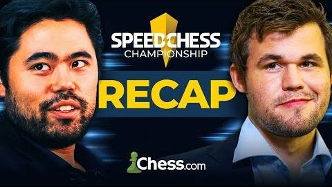
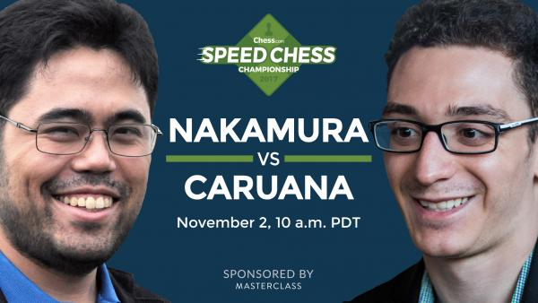
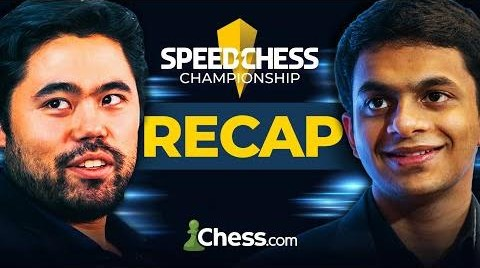
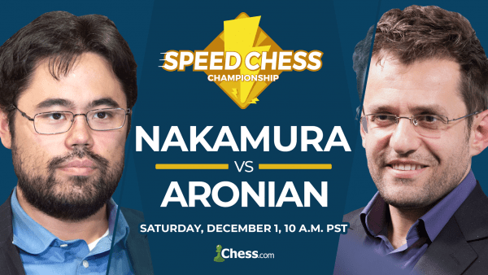

Home
About Hikaru
Videos
Rating
Social
There are some games played by
Hikaru Nakamura.
Some of them are wins, some of them are not.

Nakamura Wins Speed Chess Championship For The Fifth Time: SCC
Dec 22, 2022 | 23 min
Hikaru Nakamura won his fifth title match at the 2022 Speed Chess Championship by defeating Magnus Carlsen.

2017 Speed Chess Championship: Nakamura vs Caruana
Nov 4, 2017 | 251 min
In an American duel, Hikaru Nakamura and Fabiano Caruana battle for the right to face Sergey Karjakin in the semi-finals...

Nakamura Confirms Spot In Final: SCC Tactics
Dec 22, 2022 | 10 min
Nihal Sarin played well, but Hikaru Nakamura frequently turned around tough positions and emerged with a 14.5 - 10.5 victory.

2018 Speed Chess Championship: Nakamura vs Aronian
Dec 1, 2018 | 218 min
Hikaru Nakamura is a legend of speed chess, but Levon Aronian has been dominant thus far in the 2018 Speed Chess Championship
2018 Speed Chess Championship: Nakamura vs Aronian
Dec 1, 2018 | 218 min
Hikaru Nakamura is a legend of speed chess, but Levon Aronian has been dominant thus far in the 2018 Speed Chess Championship
2018 Speed Chess Championship: Nakamura vs Aronian
Dec 1, 2018 | 218 min
Hikaru Nakamura is a legend of speed chess, but Levon Aronian has been dominant thus far in the 2018 Speed Chess Championship
Search Video
Keyword
Search